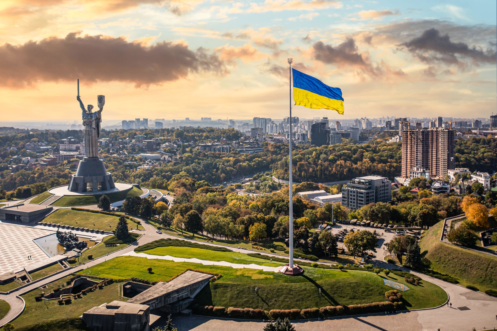
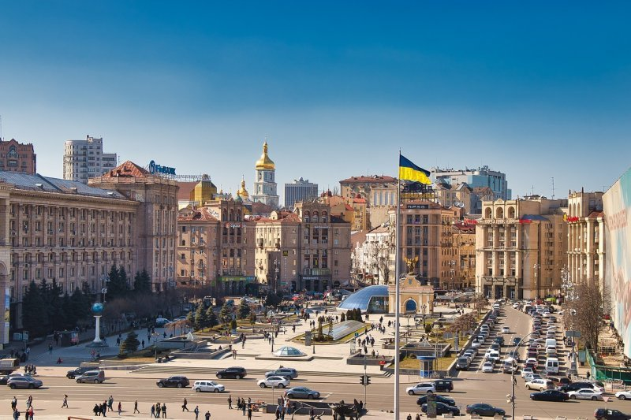

Ukraine
- Oekraïne (Oekraïens: Україна) is een land in Oost-Europa met 44,32 miljoen inwoners met als hoofdstad Kiev (Kyiv). Het land grenst in het noordoosten en oosten aan Rusland, in het noordwesten aan Wit-Rusland, in het westen aan Polen, Slowakije en Hongarije en in het zuidwesten aan Roemenië en Moldavië.
- Verder grenst het in het zuiden aan de Zwarte Zee en in het zuidoosten aan de Zee van Azov. Oekraïne is qua landoppervlakte het grootste land dat volledig in Europa ligt en is na Rusland het grootste land van Europa.[5] Etnische Russen vormen ongeveer een zesde van de Oekraïense bevolking, maar door de russificatie werd het Oekraïens lange tijd onderdrukt en is Russisch voor een kwart van de Oekraïners hun eerste taal.
- Het grondgebied van het huidige Oekraïne wordt al tienduizenden jaren bewoond en behoorde in de loop van de tijd tot verschillende rijken. De Oekraïners maakten deel uit van de Oostelijke Slaven die zich er volgens archeologische bronnen al zeker sinds 1500 v.Chr. ophielden. Na de komst van de Scandinavische Varjagen (Vikingen), ontstond omstreeks de zevende eeuw de etnisch-culturele regio Land van de Roes. In de negende eeuw stichtten de Varjagen het Kievse Rijk, dat kan worden gezien als een voorloper van zowel de Oekraïense als de Russische natie. Tijdens de Mongoolse invasie in de dertiende eeuw werd het Kievse Rijk verwoest, waarna in het westelijke deel het vorstendom Galicië-Wolynië ontstond.

67% van de bevolking leeft in steden, de overige 33% op het platteland. De grootste van de 454 steden in Oekraïne zijn:
- Kiev (Oekraiens-Nederlandse transliteratie: Kyiv) (3 miljoen inwoners)
- Charkiv (Russisch-Nederlandse transliteratie: Charkov) (1,5 miljoen inwoners)
- Dnipro (1,1 miljoen inwoners)
- Odessa (Odesa) (1 miljoen)
- Donetsk[15] (1 miljoen)
- Zaporizja (800.000)
geschidenis
Oekraïne wordt al tienduizenden jaren bewoond. De Kievcultuur op het grondgebied van het huidige Oekraïne, Rusland en Wit-Rusland wordt beschouwd als de vroegste archeologische cultuur die met enige zekerheid als Slavisch te identificeren is. De Oekraïners maakten deel uit van de Oostelijke Slaven. De Varjagen (Vikingen) die het gebied over zee bereikten werden Roes genoemd en stichtten al vóór 700 te midden van de Slavische gebieden hun eigen handelssteden. De handelsroute van de Varjagen naar de Grieken liep via de rivieren de Dnjepr en Dnjestr en zo ontstond de etnisch-culturele regio die bekend stond als Land van de Roes in het noordwestelijk deel van het huidige Rusland, het noordelijk deel van Oekraïne, Wit-Rusland en oostelijke delen van Polen.
Het Kievse Rijk raakte langzamerhand versnipperd over verschillende vorstendommen en het Oekraïense grondgebied viel in 1240 ten prooi aan invallen van Mongolen. Kiev zelf werd nagenoeg vernietigd bij het beleg van de stad. Het westelijke deel van het Kievse Rijk werd opgevolgd door het vorstendom Galicië-Wolynië. In de 14e en 15e eeuw wist Litouwen steeds meer voormalige vorstendommen van het Kievse Rijk ten westen van de Dnjepr onder zijn gezag te verenigen. Litouwen fuseerde in 1569 met Polen tot het Pools-Litouwse Gemenebest. In het zuiden hadden de Krim-Tataren, een etnisch Turks en islamitisch volk, intussen het kanaat van de Krim gesticht, een vazalstaat van het Ottomaanse Rijk. Met hun ruiterlegers heersten de Tataren over de zuidelijke steppen tussen Rusland en de Zwarte Zeekust, en bij hun plundertochten werden grote aantallen Russen en Oekraïners als slaven buitgemaakt.
Oekrain nu
De Russische invasie van Oekraïne is een aanvalsoorlog die begon op 24 februari 2022. Rusland viel buurland Oekraïne vanuit meerdere kanten binnen in een grote escalatie van de Russisch-Oekraïense Oorlog die sinds 2014 aan de gang is. De invasie leidde tot de grootste vluchtelingencrisis in Europa sinds de Tweede Wereldoorlog, met meer dan 6,5 miljoen Oekraïeners die als vluchteling werden geregistreerd en 3,7 miljoen Oekraïeners die ontheemd raakten in eigen land.[9] Rusland begon in 2021 met een grote militaire troepenopbouw langs de grens met Oekraïne en erkende op 21 februari 2022 de twee separatistische volksrepublieken Donetsk en Loegansk als onafhankelijke staten op Oekraïens grondgebied.[10] Op 24 februari 2022 vroeg in de ochtend kondigde de Russische president Poetin een 'speciale militaire operatie' aan met als doel om Oekraïne te 'demilitariseren en denazificeren'.[11] Rusland startte een invasie vanuit meerdere richtingen met grondtroepen vanuit Rusland, Wit-Rusland en de door Rusland bezette gebieden Donetsk en Loegansk.[12] In reactie hierop kondigde de Oekraïense president Volodymyr Zelensky de staat van beleg af.[13][14] Russische troepen rukten op naar steden als Cherson, Marioepol, Charkov en de hoofdstad Kiev, waar ze op hevig verzet stootten.[15] Na zware verliezen trok het Russische leger zich op 8 april 2022 volledig terug uit de oblasten Kiev, Tsjernihiv en Soemy.[16] Op 3 juli 2022 werd de oostelijke oblast Loehansk volledig door Russische troepen ingenomen.[17] De internationale gemeenschap veroordeelde de invasie breed en legde sancties op aan Rusland, met o.a. het vertrek van westerse multinationals uit Rusland tot gevolg.[18] De invasie leidde wereldwijd tot protesten, waaronder in Rusland zelf, waar Russische demonstranten massaal werden gearresteerd en de repressie van onafhankelijke media door de Russische regering werd verscherpt.[19][20] Rusland wist ondanks alle nieuwe sancties zijn economie redelijk op peil te houden, via parallelle import en het opzetten van een oorlogseconomie.[21] Oekraïne spande in februari 2022 een rechtszaak aan tegen Rusland bij het Internationaal Gerechtshof. Het hof droeg Rusland op om alle militaire activiteiten te staken, wat echter niet werd nageleefd.[22][23] Tegen december 2023 had het Russische leger 108.121 km² aan Oekraïens grondgebied bezet.[24] Volgens de Verenigde Naties waren er in september 2024 sinds het begin van de oorlog meer dan 11.700 burgerdoden en ruim 24.600 gewonden.[7]